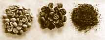

La planta del café es originaria de Africa (Etiopia), aunque los primeros en utilizar el café tal y como lo conocemos hoy en dia fueron los árabes.
Las variedades del café que nos podemos encontrar son:
El café arábica lavado es uno de los tipos de café más populares y apreciados en el mundo. Su sabor limpio, con notas frutales y florales, lo distingue de otros tipos de café. El café arábica lavado es una excelente opción para aquellos que buscan un café de alta calidad con un sabor limpio y complejo. Su proceso de producción y las características de sabor lo convierten en una bebida apreciada por los amantes del café de todo el mundo.
El café arábica no lavado o café natural es un método de procesamiento del café en el que la cereza de café, una vez cosechada, se seca al sol con toda la pulpa adherida al grano. A diferencia del café lavado, donde la pulpa se elimina antes del secado, en este método la fruta se seca junto con el grano, lo que imparte sabores y aromas únicos al café final
El café robusta es una de las dos principales especies de café cultivadas en el mundo, junto con el arábica. Originario de África Occidental, este grano ha ganado popularidad por su resistencia a las plagas, su alto rendimiento y su sabor distintivo.
El café robusta es un grano versátil y con un sabor distintivo que ofrece una experiencia de café diferente al arábica. Si bien muchos aprecian la suavidad y las notas florales del arábica, el robusta es una excelente opción para quienes buscan un café más fuerte y con un sabor más intenso.
El café caracolillo es una variedad de café arábica que se caracteriza por una mutación natural en la cereza del café. A diferencia de las cerezas normales que contienen dos granos, en el caracolillo solo crece un grano único que adopta una forma similar a un caracol, de ahí su nombre.